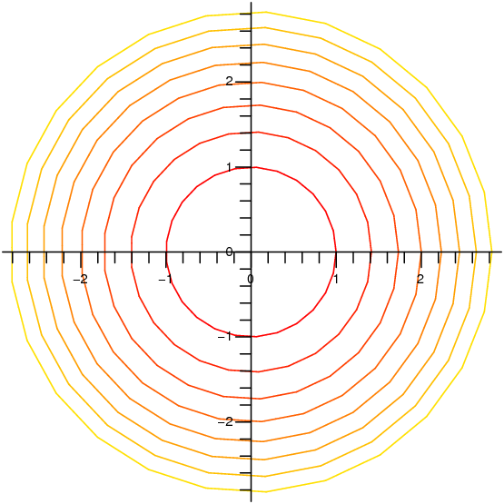
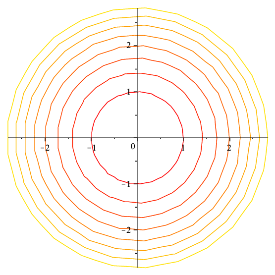
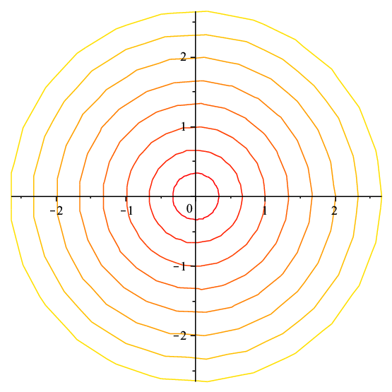

In single-variable calculus we were concerned with functions that map the real numbers $\R$ to $\R$, sometimes called "real functions of one variable'', meaning the "input'' is a single real number and the "output'' is likewise a single real number. In the last chapter we considered functions taking a real number to a vector, which may also be viewed as functions $f\colon\R\to\R^3$, that is, for each input value we get a position in space. Now we turn to functions of several variables, meaning several input variables, functions $f\colon\R^n\to\R$. We will deal primarily with $n=2$ and to a lesser extent $n=3$; in fact many of the techniques we discuss can be applied to larger values of $n$ as well.
A function $f\colon\R^2\to\R$ maps a pair of values $(x,y)$ to a single real number. The three-dimensional coordinate system we have already used is a convenient way to visualize such functions: above each point $(x,y)$ in the $x$-$y$ plane we graph the point $(x,y,z)$, where of course $z=f(x,y)$.
Example 14.1.1 Consider $f(x,y)=3x+4y-5$. Writing this as $z=3x+4y-5$ and then $3x+4y-z=5$ we recognize the equation of a plane. In the form $f(x,y)=3x+4y-5$ the emphasis has shifted: we now think of $x$ and $y$ as independent variables and $z$ as a variable dependent on them, but the geometry is unchanged.
Example 14.1.2 We have seen that $x^2+y^2+z^2=4$ represents a sphere of radius 2. We cannot write this in the form $f(x,y)$, since for each $x$ and $y$ in the disk $x^2+y^2< 4$ there are two corresponding points on the sphere. As with the equation of a circle, we can resolve this equation into two functions, $\ds f(x,y)=\sqrt{4-x^2-y^2}$ and $\ds f(x,y)=-\sqrt{4-x^2-y^2}$, representing the upper and lower hemispheres. Each of these is an example of a function with a restricted domain: only certain values of $x$ and $y$ make sense (namely, those for which $x^2+y^2\le 4$) and the graphs of these functions are limited to a small region of the plane.
Example 14.1.3 Consider $f=\sqrt x+\sqrt y$. This function is defined only when both $x$ and $y$ are non-negative. When $y=0$ we get $f(x,y)=\sqrt x$, the familiar square root function in the $x$-$z$ plane, and when $x=0$ we get the same curve in the $y$-$z$ plane. Generally speaking, we see that starting from $f(0,0)=0$ this function gets larger in every direction in roughly the same way that the square root function gets larger. For example, if we restrict attention to the line $x=y$, we get $f(x,y)=2\sqrt x$ and along the line $y=2x$ we have $f(x,y)=\sqrt x+\sqrt{2x}=(1+\sqrt2)\sqrt x$.
A computer program that plots such surfaces can be very useful, as it is often difficult to get a good idea of what they look like. Still, it is valuable to be able to visualize relatively simple surfaces without such aids. As in the previous example, it is often a good idea to examine the function on restricted subsets of the plane, especially lines. It can also be useful to identify those points $(x,y)$ that share a common $z$-value.
Example 14.1.4 Consider $f(x,y)=x^2+y^2$. When $x=0$ this becomes $f=y^2$, a parabola in the $y$-$z$ plane; when $y=0$ we get the "same'' parabola $f=x^2$ in the $x$-$z$ plane. Now consider the line $y=kx$. If we simply replace $y$ by $kx$ we get $f(x,y)=(1+k^2)x^2$ which is a parabola, but it does not really "represent'' the cross-section along $y=kx$, because the cross-section has the line $y=kx$ where the horizontal axis should be. In order to pretend that this line is the horizontal axis, we need to write the function in terms of the distance from the origin, which is $\ds \sqrt{x^2+y^2}=\sqrt{x^2+k^2x^2}$. Now $\ds f(x,y)=x^2+k^2x^2=(\sqrt{x^2+k^2x^2})^2$. So the cross-section is the "same'' parabola as in the $x$-$z$ and $y$-$z$ planes, namely, the height is always the distance from the origin squared. This means that $f(x,y)=x^2+y^2$ can be formed by starting with $z=x^2$ and rotating this curve around the $z$ axis.
Finally, picking a value $z=k$, at what points does $f(x,y)=k$? This means $x^2+y^2=k$, which we recognize as the equation of a circle of radius $\sqrt k$. So the graph of $f(x,y)$ has parabolic cross-sections, and the same height everywhere on concentric circles with center at the origin. This fits with what we have already discovered.
|  |
As in this example, the points $(x,y)$ such that $f(x,y)=k$ usually form a curve, called a level curve of the function. A graph of some level curves can give a good idea of the shape of the surface; it looks much like a topographic map of the surface. In figure 14.1.2 both the surface and its associated level curves are shown. Note that, as with a topographic map, the heights corresponding to the level curves are evenly spaced, so that where curves are closer together the surface is steeper.
Functions $f\colon \R^n\to\R$ behave much like functions of two variables; we will on occasion discuss functions of three variables. The principal difficulty with such functions is visualizing them, as they do not "fit'' in the three dimensions we are familiar with. For three variables there are various ways to interpret functions that make them easier to understand. For example, $f(x,y,z)$ could represent the temperature at the point $(x,y,z)$, or the pressure, or the strength of a magnetic field. It remains useful to consider those points at which $f(x,y,z)=k$, where $k$ is some constant value. If $f(x,y,z)$ is temperature, the set of points $(x,y,z)$ such that $f(x,y,z)=k$ is the collection of points in space with temperature $k$; in general this is called a level set; for three variables, a level set is typically a surface, called a level surface.
Example 14.1.5 Suppose the temperature at $(x,y,z)$ is $T(x,y,z)=e^{-(x^2+y^2+z^2)}$. This function has a maximum value of 1 at the origin, and tends to 0 in all directions. If $k$ is positive and at most 1, the set of points for which $T(x,y,z)=k$ is those points satisfying $x^2+y^2+z^2=-\ln k$, a sphere centered at the origin. The level surfaces are the concentric spheres centered at the origin.
Exercises 14.1
You can use Sage to graph surfaces to check your work:
Ex 14.1.1 Let $f(x,y)=(x-y)^2$. Determine the equations and shapes of the cross-sections when $x=0$, $y=0$, $x=y$, and describe the level curves. Use a three-dimensional graphing tool to graph the surface. (answer)
Ex 14.1.2 Let $f(x,y)=|x|+|y|$. Determine the equations and shapes of the cross-sections when $x=0$, $y=0$, $x=y$, and describe the level curves. Use a three-dimensional graphing tool to graph the surface. (answer)
Ex 14.1.3 Let $f(x,y)=e^{-(x^2+y^2)}\sin(x^2+y^2)$. Determine the equations and shapes of the cross-sections when $x=0$, $y=0$, $x=y$, and describe the level curves. Use a three-dimensional graphing tool to graph the surface. (answer)
Ex 14.1.4 Let $f(x,y)=\sin(x-y)$. Determine the equations and shapes of the cross-sections when $x=0$, $y=0$, $x=y$, and describe the level curves. Use a three-dimensional graphing tool to graph the surface. (answer)
Ex 14.1.5 Let $f(x,y)=(x^2-y^2)^2$. Determine the equations and shapes of the cross-sections when $x=0$, $y=0$, $x=y$, and describe the level curves. Use a three-dimensional graphing tool to graph the surface. (answer)
Ex 14.1.6 Find the domain of each of the following functions of two variables:
a. $\ds\sqrt{9-x^2}+\sqrt{y^2-4}$
b. $\arcsin(x^2+y^2-2)$
c. $\ds\sqrt{16-x^2-4y^2}$
(answer)
Ex 14.1.7 Below are two sets of level curves. One is for a cone, one is for a paraboloid. Which is which? Explain.
|  |  |